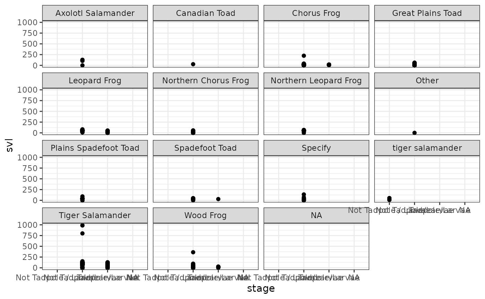

FieldAnalysisTutorial
Jasmine Nasser
2023-11-28
FieldAnalysisTutorial.RmdThis package analyzes and manipulates field survey data.
devtools::install_github("jasminenasser/nasser.pkg")## Using github PAT from envvar GITHUB_PAT## Downloading GitHub repo jasminenasser/nasser.pkg@HEAD##
## ── R CMD build ─────────────────────────────────────────────────────────────────
## * checking for file ‘/tmp/Rtmpln9aTD/remotesc371affc1bd/jasminenasser-nasser.pkg-72828df/DESCRIPTION’ ... OK
## * preparing ‘nasser.pkg’:
## * checking DESCRIPTION meta-information ... OK
## * checking for LF line-endings in source and make files and shell scripts
## * checking for empty or unneeded directories
## * looking to see if a ‘data/datalist’ file should be added
## * building ‘nasser.pkg_1.0.0.tar.gz’
## Warning: invalid uid value replaced by that for user 'nobody'## Installing package into '/tmp/RtmpJrCQZe/temp_libpath9b7291c35a2'
## (as 'lib' is unspecified)## ── Attaching core tidyverse packages ──────────────────────── tidyverse 2.0.0 ──
## ✔ dplyr 1.1.4 ✔ readr 2.1.4
## ✔ forcats 1.0.0 ✔ stringr 1.5.1
## ✔ ggplot2 3.4.4 ✔ tibble 3.2.1
## ✔ lubridate 1.9.3 ✔ tidyr 1.3.0
## ✔ purrr 1.0.2## ── Conflicts ────────────────────────────────────────── tidyverse_conflicts() ──
## ✖ dplyr::filter() masks stats::filter()
## ✖ dplyr::lag() masks stats::lag()
## ℹ Use the conflicted package (<http://conflicted.r-lib.org/>) to force all conflicts to become errorsIn this tutorial, I will use previous field data from 2005-2013 from North Dakota.
#install.packages("googlesheets4")
library(googlesheets4)
googlesheets4::gs4_deauth()
AGP_data <- read_sheet("https://docs.google.com/spreadsheets/d/1hH39exibZwdQyr3IsLzxBMXpfCz0qVN-4mAe673PPpQ/edit?usp=sharing")## ✔ Reading from AGP_data.## ✔ Range AGP_data.## Warning in .Primitive("as.double")(x, ...): NAs introduced by coercion
## Warning in .Primitive("as.double")(x, ...): NAs introduced by coercion
## Warning in .Primitive("as.double")(x, ...): NAs introduced by coercion
## Warning in .Primitive("as.double")(x, ...): NAs introduced by coercion
## Warning in .Primitive("as.double")(x, ...): NAs introduced by coercion
## Warning in .Primitive("as.double")(x, ...): NAs introduced by coercion
## Warning in .Primitive("as.double")(x, ...): NAs introduced by coercion
## Warning in .Primitive("as.double")(x, ...): NAs introduced by coercion
## Warning in .Primitive("as.double")(x, ...): NAs introduced by coercion
## Warning in .Primitive("as.double")(x, ...): NAs introduced by coercion
## Warning in .Primitive("as.double")(x, ...): NAs introduced by coercion
## Warning in .Primitive("as.double")(x, ...): NAs introduced by coercion
## Warning in .Primitive("as.double")(x, ...): NAs introduced by coercion
## Warning in .Primitive("as.double")(x, ...): NAs introduced by coercion
## Warning in .Primitive("as.double")(x, ...): NAs introduced by coercion
## Warning in .Primitive("as.double")(x, ...): NAs introduced by coercion
## Warning in .Primitive("as.double")(x, ...): NAs introduced by coercion
## Warning in .Primitive("as.double")(x, ...): NAs introduced by coercion
## Warning in .Primitive("as.double")(x, ...): NAs introduced by coercion
## Warning in .Primitive("as.double")(x, ...): NAs introduced by coercion
## Warning in .Primitive("as.double")(x, ...): NAs introduced by coercion
## Warning in .Primitive("as.double")(x, ...): NAs introduced by coercion
## Warning in .Primitive("as.double")(x, ...): NAs introduced by coercion
## Warning in .Primitive("as.double")(x, ...): NAs introduced by coercion
## Warning in .Primitive("as.double")(x, ...): NAs introduced by coercion
## Warning in .Primitive("as.double")(x, ...): NAs introduced by coercion
## Warning in .Primitive("as.double")(x, ...): NAs introduced by coercion
## Warning in .Primitive("as.double")(x, ...): NAs introduced by coercion
## Warning in .Primitive("as.double")(x, ...): NAs introduced by coercion
## Warning in .Primitive("as.double")(x, ...): NAs introduced by coercion
## Warning in .Primitive("as.double")(x, ...): NAs introduced by coercion
## Warning in .Primitive("as.double")(x, ...): NAs introduced by coercion
## Warning in .Primitive("as.double")(x, ...): NAs introduced by coercion
## Warning in .Primitive("as.double")(x, ...): NAs introduced by coercion
## Warning in .Primitive("as.double")(x, ...): NAs introduced by coercion
## Warning in .Primitive("as.double")(x, ...): NAs introduced by coercion
## Warning in .Primitive("as.double")(x, ...): NAs introduced by coercion
## Warning in .Primitive("as.double")(x, ...): NAs introduced by coercion
## Warning in .Primitive("as.double")(x, ...): NAs introduced by coercion
## Warning in .Primitive("as.double")(x, ...): NAs introduced by coercion
## Warning in .Primitive("as.double")(x, ...): NAs introduced by coercion
## Warning in .Primitive("as.double")(x, ...): NAs introduced by coercion
## Warning in .Primitive("as.double")(x, ...): NAs introduced by coercion
## Warning in .Primitive("as.double")(x, ...): NAs introduced by coercion
## Warning in .Primitive("as.double")(x, ...): NAs introduced by coercion
## Warning in .Primitive("as.double")(x, ...): NAs introduced by coercion
## Warning in .Primitive("as.double")(x, ...): NAs introduced by coercion
## Warning in .Primitive("as.double")(x, ...): NAs introduced by coercion
## Warning in .Primitive("as.double")(x, ...): NAs introduced by coercion
## Warning in .Primitive("as.double")(x, ...): NAs introduced by coercion
## Warning in .Primitive("as.double")(x, ...): NAs introduced by coercion
## Warning in .Primitive("as.double")(x, ...): NAs introduced by coercion
## Warning in .Primitive("as.double")(x, ...): NAs introduced by coercion
## Warning in .Primitive("as.double")(x, ...): NAs introduced by coercion
## Warning in .Primitive("as.double")(x, ...): NAs introduced by coercion
## Warning in .Primitive("as.double")(x, ...): NAs introduced by coercion
## Warning in .Primitive("as.double")(x, ...): NAs introduced by coercion
## Warning in .Primitive("as.double")(x, ...): NAs introduced by coercion
## Warning in .Primitive("as.double")(x, ...): NAs introduced by coercionHow to use these functions within this package.
Cleaning and Organizing the data
The first function in this package is a function that cleans or organizes the data set.This function is called scrap_col() it requires a data set and a column list you wish to get exclude from your data. Don’t forget to concatenate the columns and use quotations!
Type in this code into your R console.
## # A tibble: 6,086 × 11
## id date location traptype trapnumber critter stage mass
## <dbl> <dttm> <chr> <chr> <list> <chr> <chr> <dbl>
## 1 5533 2001-06-02 00:00:00 WHS_High S… Bucket <dbl [1]> Tiger … Not … 25
## 2 5535 2001-06-03 00:00:00 MSU_Ag Site Bucket <dbl [1]> Wood F… Not … 5
## 3 5534 2001-06-03 00:00:00 WHS Bucket <dbl [1]> Wood F… Not … 7
## 4 5538 2001-06-03 00:00:00 WHS_High S… Bucket <dbl [1]> Wood F… Not … 8
## 5 5536 2001-06-03 00:00:00 WHS_High S… Bucket <dbl [1]> Wood F… Not … 5
## 6 5537 2001-06-03 00:00:00 WHS_High S… Bucket <dbl [1]> Wood F… Not … 15
## 7 5541 2001-06-05 00:00:00 WHS_High S… Bucket <dbl [1]> Wood F… Not … 4
## 8 5542 2001-06-05 00:00:00 WHS_High S… Bucket <dbl [1]> Wood F… Not … 6
## 9 5543 2001-06-05 00:00:00 WHS_High S… Bucket <dbl [1]> Wood F… Not … 4.5
## 10 5539 2001-06-05 00:00:00 WHS_High S… Bucket <dbl [1]> Wood F… Not … 5
## # ℹ 6,076 more rows
## # ℹ 3 more variables: svl <dbl>, lat <dbl>, lon <dbl>If the code runs properly then R should return a data set without the specified columns.Limiting the data frame to manageable amounts of columns and rows.
Manipulating the data by using averages
The next function is going to manipulate the data set by creating a new column and populating it with averages. The function data_mean() uses your own input for a numeric column and takes the mean of the specified column.
Type in this code into your R console.
## # A tibble: 0 × 17
## # ℹ 17 variables: id <dbl>, date <dttm>, location <chr>, traptype <chr>,
## # trapnumber <list>, critter <chr>, stage <chr>, mass <dbl>, svl <dbl>,
## # recap <chr>, tagnum <lgl>, notes <list>, recent <dbl>, username <chr>,
## # lat <dbl>, lon <dbl>, mean_column <dbl>If the function works properly, you will see a new column toward the end of the data frame called “mean_column” and it will be populated with averages of the numbers in the column specified.
Analyzing linear relationships
The next function is for linear models. Using the lm_model() function we can look at the significance and the relationships between the data.
Type in this code into your R console.
##
## Call:
## lm(formula = formula_str, data = data_name)
##
## Residuals:
## Min 1Q Median 3Q Max
## -101.13 -6.17 -0.94 7.42 893.55
##
## Coefficients: (1 not defined because of singularities)
## Estimate Std. Error t value Pr(>|t|)
## (Intercept) 28.000 11.994 2.335 0.019603 *
## stageNot Tadpole/Larvae 73.129 15.704 4.657 3.29e-06 ***
## stageTadpole/Larvae 45.535 15.747 2.892 0.003847 **
## critterCanadian Toad -74.089 28.671 -2.584 0.009788 **
## critterChorus Frog -70.401 10.175 -6.919 5.06e-12 ***
## critterGreat Plains Toad -70.948 10.217 -6.944 4.24e-12 ***
## critterLeopard Frog -50.274 10.367 -4.849 1.27e-06 ***
## critterNorthern Chorus Frog -76.302 10.185 -7.492 7.88e-14 ***
## critterNorthern Leopard Frog -51.203 10.810 -4.737 2.23e-06 ***
## critterOther -101.129 28.671 -3.527 0.000423 ***
## critterPlains Spadefoot Toad -64.592 10.881 -5.936 3.09e-09 ***
## critterSpadefoot Toad -68.918 11.705 -5.888 4.14e-09 ***
## critterSpecify -69.797 12.153 -5.743 9.80e-09 ***
## crittertiger salamander NA NA NA NA
## critterTiger Salamander -6.675 10.152 -0.657 0.510922
## critterWood Frog -63.641 10.200 -6.239 4.72e-10 ***
## ---
## Signif. codes: 0 '***' 0.001 '**' 0.01 '*' 0.05 '.' 0.1 ' ' 1
##
## Residual standard error: 26.82 on 5525 degrees of freedom
## (546 observations deleted due to missingness)
## Multiple R-squared: 0.598, Adjusted R-squared: 0.5969
## F-statistic: 586.9 on 14 and 5525 DF, p-value: < 2.2e-16If the code works properly then you should see a summary table indicating significant relationships between the response and predictor variables of the data set.
Visualizing the Data using plots
The next function will help visualize data using a variety of plot. Use the custom_plot() function and specify which plot type you wish to see for your data using the independent and dependent variable you chose.
Type in this code into your R console.
library(nasser.pkg)
custom_plot(AGP_data,stage,svl,critter,"scatter")## Warning: Removed 546 rows containing missing values (`geom_point()`).
If the function properly works the specified plot type should show and the columns appear in the order you specified in the argument of the function.
MANOVA analysis
The next function is a MANOVA analysis which uses two numeric response variable and a single categorical predictor. Using the manova_maker() and the data frame and three different columns meeting the criteria above runs a linear model summary similar to a normal linear model function.
Type in this code into your R console.
library(nasser.pkg)
manova_maker(AGP_data,"mass","svl","critter")## Df Pillai approx F num Df den Df Pr(>F)
## predictor 12 0.52534 141.73 24 9548 < 2.2e-16 ***
## Residuals 4774
## ---
## Signif. codes: 0 '***' 0.001 '**' 0.01 '*' 0.05 '.' 0.1 ' ' 1If the MANOVA function works the result shows the significance of the relationship and uses the Pillai value to show the R^2 value used in statistical analyses.
Density Plot
This function creates a density plot using a numeric column and two categorical columns of the data set. Use density_plot() for looking at the fluctuation of the numerical values.
Type in this code into your R console.
library(nasser.pkg)
density_plot(AGP_data,"mass","critter","stage")## Warning: Removed 1299 rows containing non-finite values
## (`stat_density()`).## Warning: Groups with fewer than two data points have been dropped.
## Groups with fewer than two data points have been dropped.## Warning in max(ids, na.rm = TRUE): no non-missing arguments to max; returning
## -Inf
## Warning in max(ids, na.rm = TRUE): no non-missing arguments to max; returning
## -Inf
If the function works properly in R the density plot should appear using the specified columns meeting the aforementioned criteria.